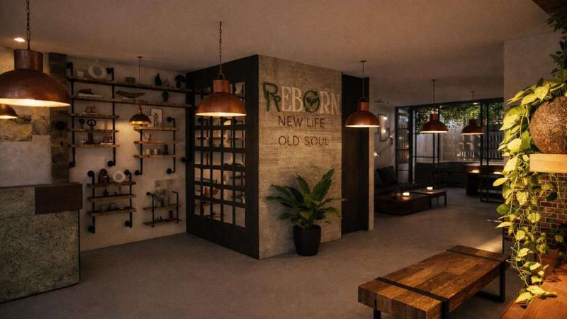
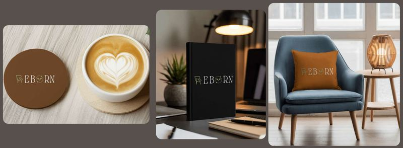
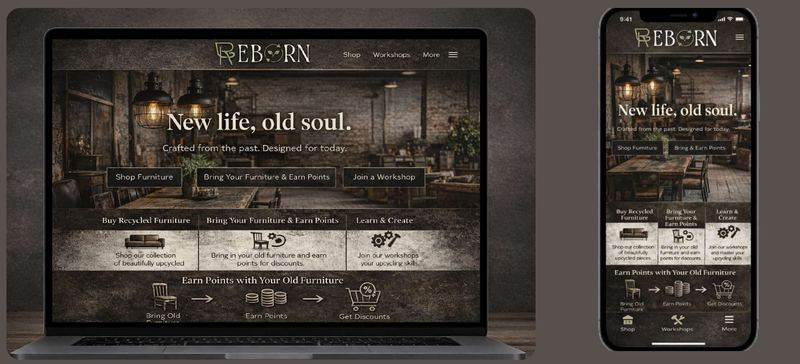
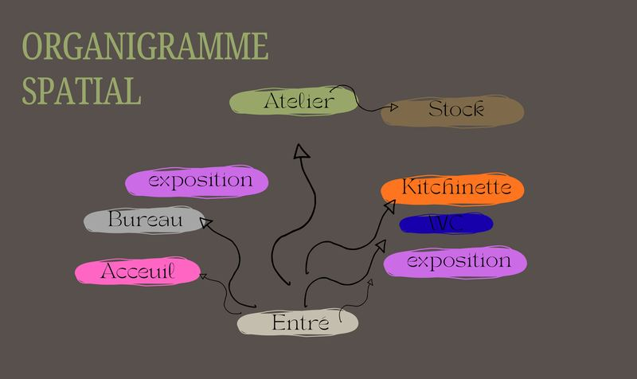
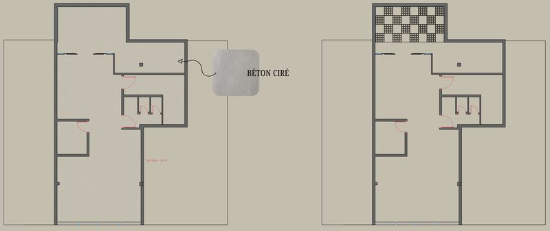
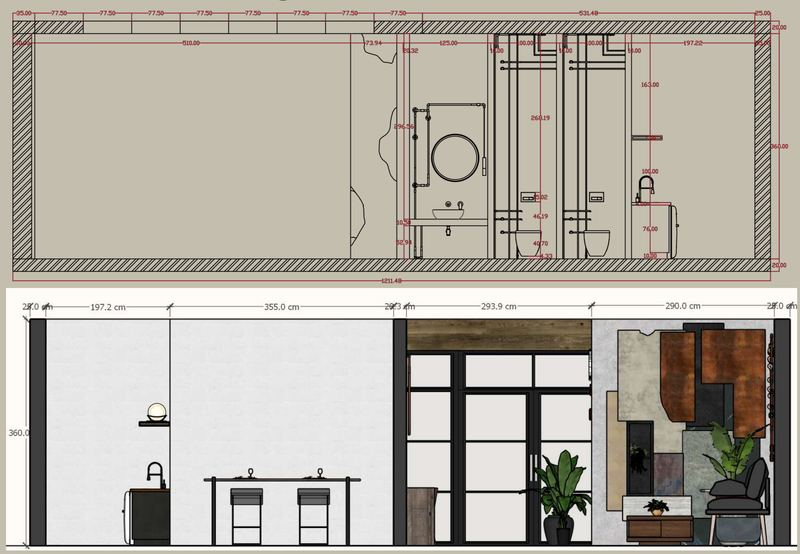
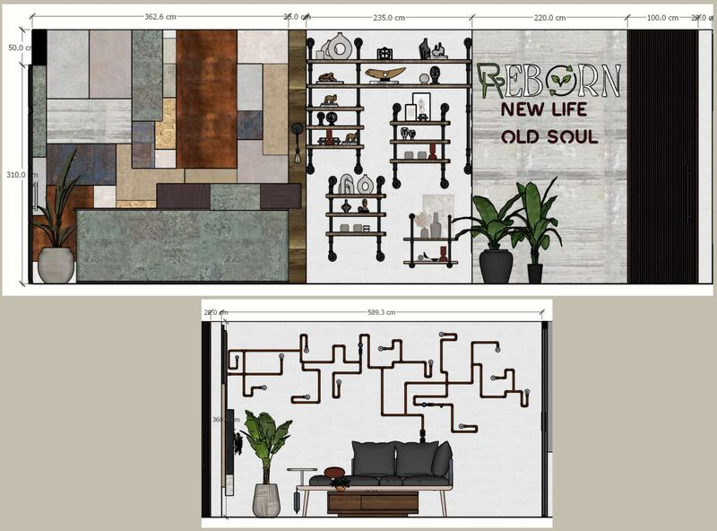
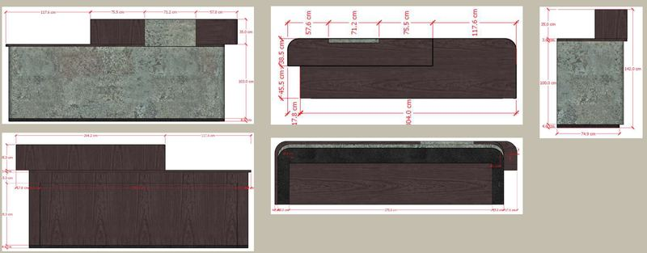

Concept store
REBORN
A furniture concept store, from visual identity to interior perspectives.

Concept
Repair, transform, learn.
REBORN gives furniture and decor a second life.
The store showcases recycled, restored and transformed pieces. A participatory workshop lets customers learn to repair, customise or create their own objects, encouraging conscious, lasting consumption.

Identity
Green and black for nature, durability and modernity.
A textured white wordmark suggests transformation, with a circular leaf icon for rebirth and recycling. The vintage, textured typeface echoes raw material.
- Green#98A869
- Text#F2F0EF
- Background#111111


Programme
Seven spaces, from the entrance to the workshop.
| Space | Area | Qty | Note |
|---|---|---|---|
| Reception | 7 m² | 1 | Spacious, with sofa and coffee table |
| Showroom | 75 m² | 2 | |
| Recycling workshop | 30 m² | 1 | |
| WC | 8 m² | 2 | |
| Storage | 16 m² | 1 | |
| Office | 8 m² | 1 | Admin space with staff storage |
| Kitchenette | 15 m² | 1 |

Plans and details
A large showroom, with the workshop at the back.





Perspectives
Copper, polished concrete, reclaimed wood and plants.